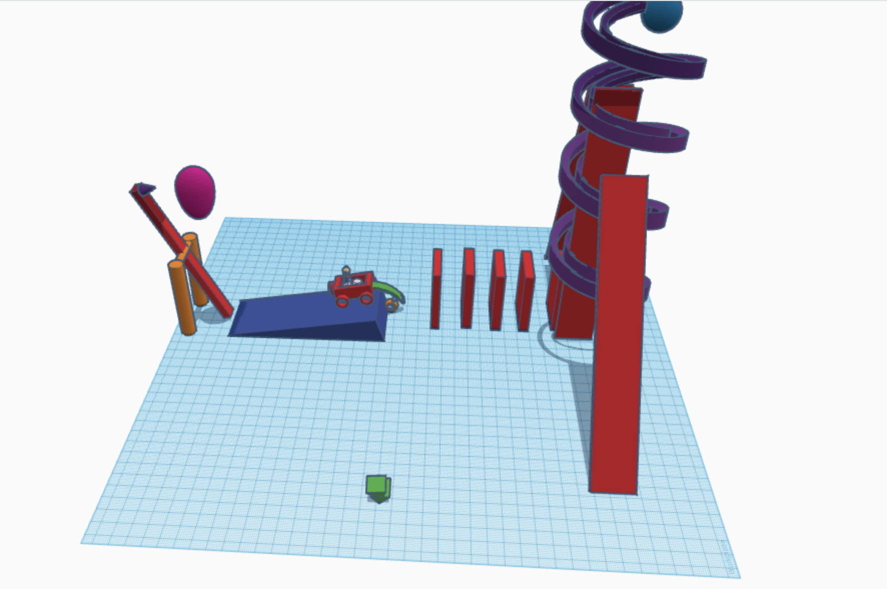

8/29/2022 Today is my REAL first day of making a website.
9/2/2022 This week was boring. I had a lot of hw and I procrastinated most of it until it was actually time for class. I was the judge for the CAD contest and the winner was a really complicated toaster made by someone talented. I m on lab #10 for ap and my rube goldberg machine is coming together, i'm just struggling on how i will actually make it.
9/8/2022 The queen died today. We worked on a rube goldberg machine with our new groups. Honestly I'm not so sure if this will work but oh well. I get splatoon 3 tomorrow so I'm excited for that!
9/16/2022 This week was such an uneventful week. I built the trident boat and met cool ppl while doing that. Also me dego nark and sunny got to work on making the rube goldberg machine. I had to spend so much money at walgreens just to get pringles cans :(. PaperBoatWorksheet!!
9/26/2022
Mr poole got covid !! rip poole. He violated everyone with the pictures he took of everyone. Last minute we had to whip up a crappy rube goldberg machine, we had to stay after class because we couldn't pop the balloon.

9/30/2022 Dear Mr. Poole, I hope you are doing okay during these sad covid times. I finished the prosthetic for the Elephant, it's an okay looking thing ngl.
10/7/2022 IM JOINING A SMASH TEAM!! maybe i can go pro >:) well im not necessarily in a team yet. but im praying on my knees. Mr poole is honestly one of my favorite teachers, he's nice chill and funny. I remember in the past, i saw him and thought that he was a senior. I also dissected a computer with Tigran, and it seems like Mr. Poole liked how I looked cuz theres 20 photos of me :D.

10/24/2022 We spent the last two weeks cadding, making, and launching bottle rockets. First we had to draw out our ideas on a piece of paper, then we cadded our ideas, then we put our ideas into a real life prototype. If i remember correctly, no rockets made any real distance, but it was still a fun experience. Otherwise,


11/4/2022 We are learning Electrical Engineering for this month. The concepts were a bit difficult in the beginning but I think I understand it now. Falcon Team B is completely out the tourney. Bro these guys in the back are literally bullying ppl, i feel bad but i don't wanna be involved. making fun of ppl's accent, armenian slurs, and just bein hella loud and annoying. If they weren't in this class it would be so fun. Here is some screenshots showing my breadboards. I have to get used to all of the formulas with ohms, volts, current, etc.
11/10/2022 If im being honest I can't comprehend electrical engineering but at least I got a cool partner who isn't either a complete nerd or a dumbahh. This week we did actual electrical engineering, using physical breadboards, LEDs, and wires to make lights and shi. Mr. Poole, you are a munch.


11/18/2022 I feel tired and I got a cold yesterday =(, this week we started to code using arduino IDE and I wish we explored arduinos more but I don't think we will be able to do that. Using the code we were able to turn on multiple lights at a time, and even create patterns. I have no clue what my plans for thanksgiving break are. I only have footage of LAB 3 + 4 but better. 12/2/2023 Me and my team are going to build a spaghetti bridge that can hold a bucket filled with water. I took the liberty of doing most of the project so far by sketching an example on cardboard. istg some of these ppl in my group dont do shat. i figured that we didn't need a full on road to hold any toy cars, just one line of a bunch of spaghetti to hold up the carabiner thats holding the bucket of water. Lately I've wanted to just let my team try to do some work, see how far they would go.
12/9/2023 Today when I went to 7th period to test our bridge, it snapped in half. Some parts of the woodglue weren't on the tissue paper, so we had to scrape it out gently from the cardboard. It broke that part anyways. Also, since the weight distribution was mostly in the middle, it snapped through the middle when i tried to do a minor stress test.
1/13/2023 Sadly I was not here to see how the bridges worked, but I heard that all of the bridges didn't do so well. During the winter break, I got my driver's license, and I slept for sooo long. I even forgot if it was sunday or wednesday, I completely forgot. This week is Business Engineering, and we are learning how to pitch our own project. I was paired with Diego and we developed a new idea called "StarSleeper". A rocket ship bed made for children, teens, and is able to be monitered by parents/guardians. By understanding our own strengths and weaknesses, and by believing in ourselves and our product, I believe we could do a perfect pitch
1/19/2023 This week we presented our ideas to eachother, and I came to the realization that it really didn't matter about the product at hand, all you had to do is wait for them to outbid eachother, and then pick the best offer. We picked rohan because no one else did. I learned how to make shark-tank like offers, and how to accurately assume what someones net worth is. our business presentation
1/27/2023 This week we learned about chemical engineering for the first part of the week. Me and my partner Diego made oobleck, a non-newtonian fluid made out of pure cornstarch and water. Even though it has nothing to do with, we tried to make a house of cards. I don't understand why we would do that challenge, other than to demonstrate either physics or patience. On wednesday, a big project got released, where me and Dhruv try to make an rc car with arduino code. We had to make a 5 page proposal to Mr. Poole proposing the idea of our car. We wanted to try and make the frame out of legos. During the week, me and dhruv went on calls afterschool to discuss what to put on the proposal, as well as updating our bom's, and our tinkercads.
2/3/2023 This week we started to work on our arduino car. We did more research on our arduino car. We looked into diffrent components to use on our car and how it works. We learned that we couldn't use the motor sheild because it takes up all the pins so that we found a smaller motor controller that we will use so that we can still hook up the leds we wanted originally to use as blinkers and headlights on the car. This weeks challenge day was to make the longest post-it-note bridge. We were only allowed 15 sticky notes which we cut up into 1/4 pieces to spread out the bridge and lessen the weight. If i remember we got around 120 in. The winners made a bridge that was about 140 inches.
3/7/2023 This week and last week we were assigned / got to make groups for boat building. I heard that this was technically the final :(. I'm with chris, diego, and dhruv to make the best boat we can. At first, me and diego were researching what winning boats look like.
3/14/2023 This week we continued to build the boats. I hate raining days, and especially yesterday, I had to carry a bunch of cardboard for this class in the rain :(. My hands were slippin and everything was horrible. Anyways, our boat is angled on only one side, and we are making it like that until we find a better option. The challenge day was eggdrop. I teamed with Chris and Rafayel to try and make an egg drop 3 floors without cracking, and we successfully did it using a cardboard box, straws, cotton balls inside, and a huge trashbag parachute.